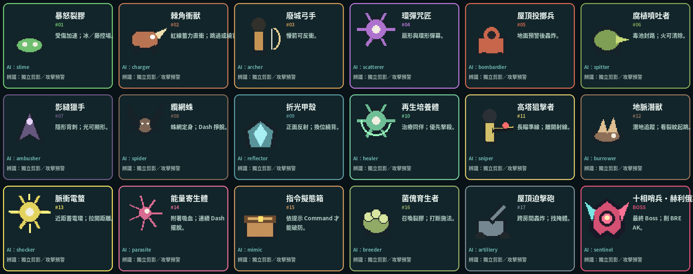

有機垂直地圖
世界不是三棟規律高樓，而是 原有 52 房保留，再新增 16 個東境探索房＋10 間職業教場，共 78 房、洞穴、井道、避難所與戶外遺址，由 103 條主路、回環與支線連接。M 可開啟有機世界圖。
首次載入需要片刻。若長時間停在這裡，請確認 index.html、styles.css、js/、assets/ 都已上傳；本機可改開 PLAY_OFFLINE.html。
位移斬與快速取消。
世界不是三棟規律高樓，而是 原有 52 房保留，再新增 16 個東境探索房＋10 間職業教場，共 78 房、洞穴、井道、避難所與戶外遺址，由 103 條主路、回環與支線連接。M 可開啟有機世界圖。
方向鍵精準移動；Space 二段跳、牆跳與受身；Shift 八方向 Dash；A 牽引發光環，或反衝敵方慢速投射物。地面高摩擦，放開方向會快速停下。
不只 ZZZZ。支援 ZX、ZZX、ZZZX、ZXX、XZX、XXZ，以及方向、Dash、空中分支。輸入稍早會進 Buffer，抵達取消窗後自動接出。
C／V／B／Q 只有短冷卻。每個職業的技能都兼具位移、挑空、抓取、召喚、造平台或改變敵人位置，設計目標是邊移動邊打。
1–0 第一次發射慢速元素；場上存在同元素錨點或標記敵人時，再按同鍵交換位置。火留火區、冰造平台、引力吸怪、自然生藤、水造噴泉。
白框房間是避難所。冰箱、床、工作台、收音機、終端、書架與地圖桌都有功能；功能收集品位於支線房或解謎終點，不會排成階梯。
不同職業會改變同一指令的位移、命中方式或後續效果。下方是通用骨架；遊戲內教官會依職業逐組引導。
點選一列後按新鍵；若撞鍵，兩個動作會交換。
亮色＝已探索；金色角標＝避難所；紫線＝元素／能力門。

不是只讀招式表：實際命中、控場、換位與追擊才算過關。教場暫借技能與強化，離開後還原原本配置。↑↓←→ 選擇 · Enter 進入。
當下視界＋兩個戰術槽。所有視界已可試用，不花 MP；濾鏡會改變碰撞、時間與命中，不只顏色。下方六間試煉可立即進入。